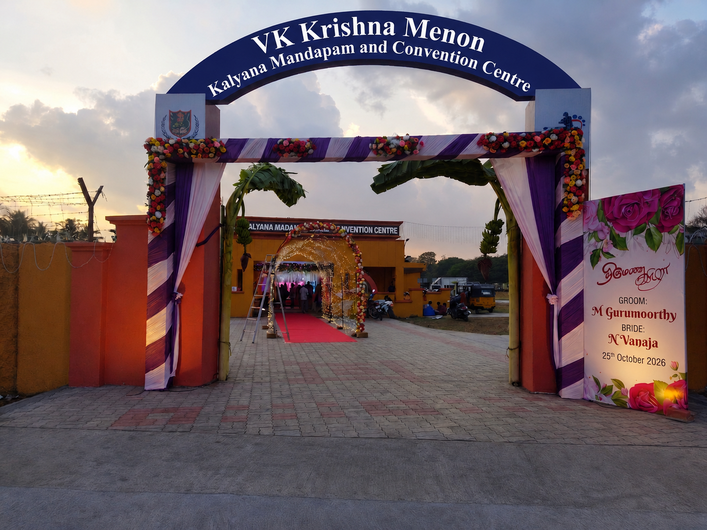

OCTOBER 24 & 25
24th October
6:00 PM onwards
Join us for an evening of celebrations, laughter, dining, and music.
25th October
7:30 AM – 9:00 AM
Witness the auspicious vows and rituals as we unite in holy matrimony.
Avadi, Chennai, Tamil Nadu
